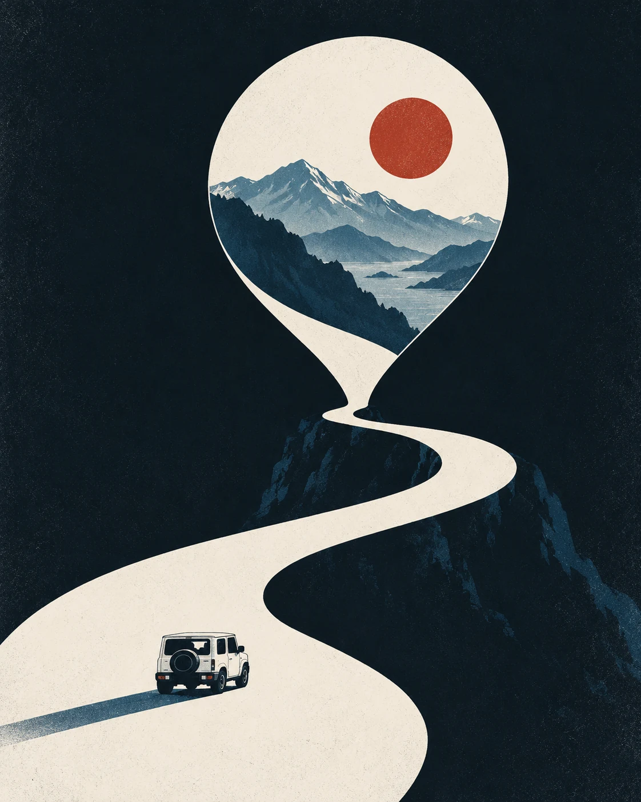
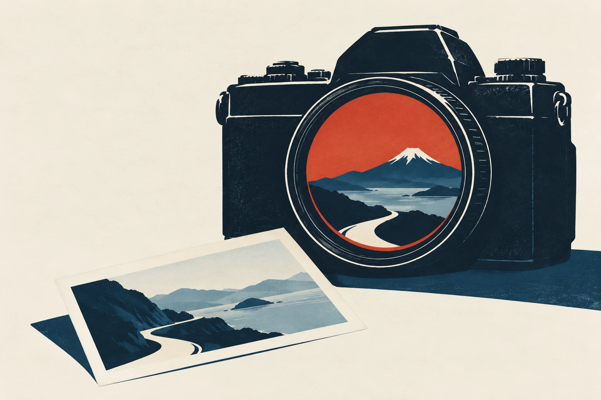

Keep the relationship alive.
Help owners who were drawn to the car’s looks discover the experiences it can make possible.
JimJam / Product & interaction design
いつもの愛車と、
A travel companion that helps Jimny owners in Japan discover places, record their journeys, and find a reason to head out again.

JimJam brings a community of owners onto one map. A place someone visits becomes an invitation for someone else to go.
A pin sparks an idea.
Turn curiosity into a memory.
Inspire the next owner.
Help owners who were drawn to the car’s looks discover the experiences it can make possible.
Put real places, personal records, and shared interests at the centre of discovery.
As one of several designers, I contributed to UX and UI decisions, information architecture, flows, wireframes, and screens.
Research and segmentation were completed by the team before my involvement. The design-system reconstruction shown later is a separate personal study after release.
The team identified two motivations: adventure and attraction to the car’s character. JimJam sought to turn that initial attraction into an ongoing experience.
Off-road routes, camping, and time outdoors already give ownership a purpose.
The opportunity is to help that first attraction grow into experiences worth returning to.
How might we help owners
find their next reason to go?
A map of places visited by other owners makes the next adventure feel relevant and within reach.
Five navigation actions connect the product: Map, Discover, Create a record, Saved, and Profile. The map is the starting point; personal records keep the experience moving.
見つける。
出かける。

Map / 地図
See activity across Japan, then move closer to explore a place through an owner’s record.
A feed foregrounds what is new. A map foregrounds where people go. That makes geography central, but puts more pressure on pin clarity and visual density.
Discover / 見つける
Twenty-two content tags combine with vehicle and personality filters to narrow the search. Results can be viewed as a list or on the map.
Posting uses five categories. Searching uses a richer set of tags. Keeping them separate makes choosing a category manageable while letting discovery stay specific.
Personality / 診断
Five questions introduce an ownership personality—a first point of connection and another way to find shared interests.
The quiz adds steps before the core experience. It can be skipped and revisited, so participation remains a choice.
Create a record / 記録する
Start from a photo or a location. Both paths lead to one scrolling card with a place, date, category, optional photos and comment, and a public/private choice.

A single card avoids a sequence of form steps, but its optional fields need a clear hierarchy so posting stays approachable.
The case-study reconstruction makes the product’s structure visible: what belongs where, how the journeys connect, and how recurring elements become reusable components.
Organise the five core actions.
Map paths, branches, and returns.
Set hierarchy before styling.
Make recurring patterns reusable.
Assemble and check each state.
Explore ten sections, from first launch to supporting states. These are reconstructed screens; media placeholders and the proposed section remain clearly visible.
The first impression, account introduction, and terms.
After release, I explored JimJam again through a personal reconstruction of its design system. This study uses the shipped app as a reference; its proposed accessibility changes are not changes to the live product.
次の冒険へ。
A shared language.
A distinct character.
The study’s accessible text styles, in points. Product screenshots retain their Japanese UI copy.
Olive and warm neutrals ground the interface. Gold carries emphasis. Category colours have a separate role on the map.
Keep what makes it JimJam
Folded button corners, card accents, and the quiz rhino preserve JimJam’s recognisable character.
Semantic tokens connect component styles; layout tokens define spacing and sizes. One change can carry across the system.
Icon construction
Circles, arcs, and strokes share one grid. The proposed outline treatment uses lighter strokes, muted olive, and generous space.
The original comparison is available below. Illustrative marks, such as the rhino, retain their own character.
Core actions & supporting controls
Accessibility as craft
The study explored contrast, touch areas, and category recognition. These are design measurements and proposed treatments—not evidence of improved usability or a full accessibility certification.
Pair category colours with glyphs so meaning does not depend on hue alone. The app already uses these glyphs elsewhere.
The study proposes a 44pt touch area for smaller controls. A small visual marker can remain small while its interactive region grows.
Dense maps also need hit-testing and overlap behaviour checked in a working prototype.
The source study reports the olive at 5.68:1 on cream, with a darker proposed text treatment around 7.08:1. The exact foreground and background both matter.
Reported study values. The source documentation contains token differences that need reconciliation before implementation.
Where the system stops
SUZUKI ID pages and the native photo picker belong to other systems. Those handoffs are part of the real experience, even when their appearance differs from JimJam.
The reconstruction keeps those boundaries visible. The opportunity is to make entering and returning understandable, rather than imply that every surface is controlled by the app team.
Three views of JimJam: places recorded, public feedback, and the potential audience. Read each with its source and scope in mind.
01 / ActivityEstimate
3,800–4,500
Visible map records
A nationwide recording gives a view of activity. Overlapping pins make a range more honest than a single count.
Source: supplied nationwide screen recording; sampled pin-marker count. Records do not equal individual users.
02 / FeedbackHistorical snapshot
4.3 / 5
Across iOS App Store ratings
Japan App Store figure recorded in the September 2026 project material. This is not a live rating.
03 / AudienceProject estimate
~500,000
Jimny owners in Japan
Owner-base estimate supplied for the project. This describes the potential audience, not registered app users.
These snapshots show recorded places, store feedback, and audience context. Downloads, active users, retention, task success, and app speed were not measured in the supplied material. The later design study’s measurements are shown separately.
The thread through the work
The original product brings owners together through places. The later study explores how a consistent system can carry that experience into the details.
The next step is to reconcile the remaining source differences, validate the proposed interactions in a working prototype, and listen to owners using it.
Pawan Mishra / Product & UX Design
旅に、自分らしさを。